전자기기기능사 (2011-02-13 기출문제)
1과목: 전기전자공학
1. 제어정류소자(SCR)와 관계없는 것은?
- 다이나트론
- 대전류의 제어
- 게이트전류로서 통전
- 쌍방향성
(정답률: 75%)

2. 전자 결합으로 전자가 빠져 나간 빈자리는?
- 정공
- 도너
- 억셉터
- 이온 전류
(정답률: 85%)
3. 상용전원의 정류방식 중 맥동주파수가 180[Hz]가 되었다면 이때의 정류회로는?
- 3상반파정류기
- 3상전파정류기
- 2배전압정류기
- 브리지형정류기
(정답률: 77%)
4. 그림과 같은 이상적인 발진기에서 발진주파수를 결정하는 소자는?
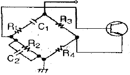
- R3, R4, C1, C2
- C1, C2, R1, R2
- C1, R1, R2, R3
- C1, R1
(정답률: 73%)
5. 공진회로에 있어서 선택도 Q 를 표시하는 식은?(단, RLC 직렬공진회로이다.)
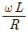
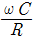
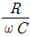
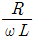
(정답률: 73%)
6. 트랜지스터가 ON, OFF 스위치로 동작하기 위한 영역으로 가장 적합한 것은?
- 포화영역과 차단영역
- 활성영역과 차단영역
- 활성영역과 포화영역
- 포화영역과 항복영역
(정답률: 70%)
7. 다음 회로에서 합성정전용량은?
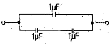
- 0.5[㎌]
- 1[㎌]
- 1.5[㎌]
- 3[㎌]
(정답률: 71%)
8. 보통 발진회로에 많이 사용되는 수정의 전기적 등가회로는?
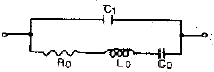
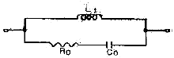
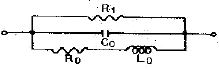
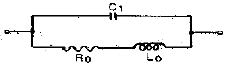
(정답률: 57%)
9. 이상적인 연산증폭기의 주파수 대역폭으로 가장 적합한 것은?
- 0
- 100[kHz]
- 1000[kHz]
- 무한대
(정답률: 86%)
10. 그림과 같이 이상적인 OP Amp에서 출력전압 V0 는?
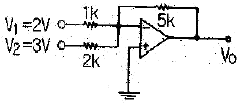
- -17.5[V]
- 18.5[V]
- 19.5[V]
- -20.5[V]
(정답률: 60%)
11. R=10[kΩ], C=0.5[㎌]인 RC직렬회로에 10[V]를 인가할 때 시정수 τ 는?
- 1[ms]
- 5[ms]
- 10[ms]
- 50[ms]
(정답률: 64%)
12. 시계, 송신기, PLL 회로 등의 용도로 주로 사용하는 발진회로는?
- RC 발진회로
- LC 발진회로
- 수정 발진회로
- 세라믹 발진회로
(정답률: 62%)
13. 이미터 폴로어(emitter follower) 증폭회로에 대한 설명으로 틀린 것은?
- 컬렉터 접지 방식으로 궤환 증폭기의 일종이다.
- 입력 임피던스가 높고, 출력 임피던스가 매우 낮다.
- 전압이득이 1 보다 크다.
- 버퍼(buffer)용으로 많이 사용된다.
(정답률: 53%)
14. 직렬형 정전압 회로의 특징에 대한 설명으로 틀린 것은?
- 경부하시 효율이 병렬에 비하여 훨씬 크다.
- 과부하시 전류가 제한된다.
- 출력전압의 안정 범위가 비교적 넓게 설계된다.
- 증폭단을 증가시킴으로써 출력저항 및 전압 안정계수를 매우 작게 할 수 있다.
(정답률: 57%)
15. 반송파의 전류가 i0 = l0 sin(ωt + θ)에서 l0가 의미하는 변조방식은?
- 주파수 변조
- 위상 변조
- 펄스 변조
- 진폭 변조
(정답률: 44%)
2과목: 전자계산기일반
16. 10[㎌]의 콘덴서에 250[V]의 전압을 가할 때, 콘덴서에 저장되는 에너지는?
- 약 0.31[J]
- 약 0.36[J]
- 약 0.42[J]
- 약 0.52[J]
(정답률: 45%)
17. 다음은 C언어에서 쓰이는 연산자 기호이다. 대입의 의미를 갖고 있는 연산자는?
- = =
- &
- +=
- ?
(정답률: 56%)
18. 컴퓨터 내부에서 수치자료를 표현하는데 사용하지 않는 형식은?
- 고정 소수점 데이터 형식
- 부동 소수점 데이터 형식
- 팩 형식
- 아스키 데이터 형식
(정답률: 55%)
19. 다음 중 스택(stack)과 관계없는 것은?
- PUSH
- LIFO
- POP
- FIFO
(정답률: 68%)
20. 목적 프로그램을 만들지 않고 원시 프로그램을 명령문 단위로 번역하여 실행하는 언어는?
- 코볼(COBOL)
- 포트란(FORTRAN)
- C 언어
- 베이직(BASIC)
(정답률: 48%)
21. <보기>는 불 대수의 정리를 나타낸 것이다. 올바른 것만 나열한 것은?
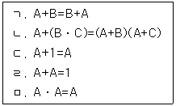
- ㄱ, ㄴ, ㄹ, ㅁ
- ㄱ, ㄴ, ㄷ, ㅁ
- ㄱ, ㄴ, ㅁ
- ㄴ, ㄷ, ㅁ
(정답률: 69%)
22. 순서도를 작성하는 방법으로 틀린 것은?
- 처리순서의 방향은 아래에서 위로, 오른쪽에서 왼쪽 화살표로 표시한다.
- 논리적 타당성을 확보할 수 있도록 작성한다.
- 처리과정을 간단 명료하게 표시한다.
- 순서도가 길거나 복잡할 경우 기능별로 분할한 후 연결기호를 사용하여 연결한다.
(정답률: 84%)
23. 연산될 데이터의 값을 직접 오퍼랜드에 나타내는 주소 지정 방식은?
- 직접 주소 지정 방식
- 상대 주소 지정 방식
- 간접 주소 지정 방식
- 레지스터 방식
(정답률: 79%)
24. 마이크로프로세서에서 가산기를 주측으로 구성된 장치는?
- 제어장치
- 입출력장치
- 산술논리 연산장치
- 레지스터
(정답률: 83%)
25. 16진수 1B7을 10진수로 변환하면?
- 339
- 340
- 439
- 440
(정답률: 73%)
26. 가상기억장치(virtual memory)의 개념으로 가장 옳은 것은?
- 기억장치를 분할한다.
- data를 미리 주기억장치에 넣는다.
- 많은 data를 주기억장치에서 한 번에 가져오는 것을 의미한다.
- 프로그래머가 필요로 하는 주소공간보다 작은 주기억장치의 컴퓨터가 큰 기억장치를 갖는 효과를 준다.
(정답률: 76%)
27. 2진 직렬가산기에 대한 설명 중 틀린 것은?
- 더하는 수와 더해지는 수의 비트 쌍들이 직렬로 한 비트씩 전가산기에 전달된다.
- 1개의 전가산기와 1개의 자리 올림수 저장기가 필요하다.
- 병렬 가산기에 비해 계산 시간이 빠르다.
- 회로가 간단하다.
(정답률: 58%)
28. 플립플롭으로 구성되는 레지스터는 어느 역할을 수행하는가?
- 기억장치
- 연산장치
- 입력장치
- 출력장치
(정답률: 70%)
29. 잡음지수 측정에 사용되는 계기가 아닌 것은?
- 잡음 발생기
- 수신기
- 레벨계
- 주파수 체배기
(정답률: 56%)
30. 고 정밀도의 측정이 가능하고, 영위법에 의한 측정 원리를 이용한 기록계기는?
- 펜식
- 타점식
- 자려식
- 자동평형식
(정답률: 75%)
3과목: 전자측정
31. 다음 중 스위프 신호 발진기의 구성요소가 아닌 것은?
- LC 발진기
- 톱니파 발진기
- 리액턴스 관
- 고주파 발진기
(정답률: 39%)
32. 무부하시 단자전압이 100[V]이고, 부하가 연결 됐을 때 단자전압이 80[V]이면, 이때의 전원 전압변동률은?
- 15[%]
- 20[%]
- 25[%]
- 35[%]
(정답률: 58%)
33. 지시계기의 3대 구성요소에 포함되지 않는 것은?
- 구동장치
- 제어장치
- 제동장치
- 진동장치
(정답률: 85%)
34. 다음 중 볼로미터로 측정할 수 없는 것은?
- 고주파 전압 측정
- 고주파 전류 측정
- 고주파 파형 측정
- 마이크로파 전력 측정
(정답률: 50%)
35. 오실로스코프로 파형을 관측 할 때 수평 편향판에 가하는 전압은?
- 톱니파
- 삼각파
- 사인파
- 구형파
(정답률: 54%)
36. 정전용량이나 유전체 손실각의 측정에 사용되는 것은?
- 셰링 브리지(Schering Bridge)
- 맥스웰 브리지(Maxwell Bridge)
- 헤이 브리지(Hay Bridge)
- 휘트스톤 브리지(Wheatstone Bridge)
(정답률: 76%)
37. R = V/I 의 계산식으로부터 저항 R을 구하는 측정 방법은?
- 직접측정
- 간접측정
- 편위법
- 영위법
(정답률: 55%)
38. 다음 중 가장 높은 주파수까지 사용할 수 있는 계기는?
- 흡수형 주파수계
- 헤테로다인 주파수계
- 레헤르선 주파수계
- 동축형 주파수계
(정답률: 75%)
39. 참값이 100[V]인 전압을 측정한 값이 99[V]였다면 백분율 오차는?
- -1
- -0.91
- 0.0101
- 1
(정답률: 61%)
40. 그림과 같은 이산사상 계수측정 회로의 빈칸 A와 B에 구성되어야 할 것은?
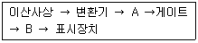
- A : 파형 정형회로, B : 계수기
- A : 계수기, B : 파형 정형회로
- A : 비교기, B : 계수기
- A : 계수기, B : 비교기
(정답률: 46%)
41. 다음 중 태양전지를 연속적으로 사용하기 위하여 필요한 장치는?
- 변조장치
- 정류장치
- 검파장치
- 축전장치
(정답률: 83%)
42. 전자 빔이 시료를 투과할 때 속도가 다른 여러 전자가 생겨서 상이 흐려지는 현상은?
- 색수차
- 구면수차
- 라디오존데
- 축 비대칭수치
(정답률: 78%)
43. 비디오 신호를 기록, 재생하는 장치로 해상도나 화상의 아름답기를 결정하는 성능상 매우 중요한 부분은?
- 비디오 헤드
- 헤드 드럼
- 비디오 테이프
- 로딩 기구
(정답률: 74%)
44. 다음 중 메인앰프의 구비조건이 아닌 것은?
- 주파수 특성이 모든 주파수에서 평탄할 것
- 전원리플이 많을 것
- S/N가 우수할 것
- 왜율이 적을 것
(정답률: 65%)
45. 서보 기구의 일반적인 특징으로 틀린 것은?
- 조작량이 커야 한다.
- 추종속도가 빨라야 한다.
- 서보 모터의 관성은 커야 한다.
- 회전력에 대한 관성의 비가 커야 한다.
(정답률: 61%)
4과목: 전자기기 및 음향영상기기
46. 자동제어에서 인디셜(indicial) 응답을 조사할 때 입력에 가하는 파형은?
- 사인파
- 펄스파
- 스텝파
- 톱니파
(정답률: 47%)
47. 녹음기 회로에서 자기 테이프에 기록된 내용을 소거하는 방법 중 거리가 먼 것은?
- 교류 소거법
- 영구자석에 의한 소거법
- 전자석에 의한 소거법
- 전압 소거법
(정답률: 46%)
48. 다음 중 압력-변위 변환기에 속하는 것은?
- 전자석
- 슬라이드저항
- 전자코일
- 스프링
(정답률: 78%)
49. 다음 그림은 동작 신호량(Z)과 조작량(Y)의 관계를 나타낸 것이다. 그림의 ( )안에 알맞은 것은?
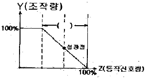
- 적분시간
- 미분시간
- 동작범위
- 비례대
(정답률: 63%)
50. 공중선의 전류가 57.3[A] 이고 복사저항이 250[Ω], 손실저항이 50[Ω]일 때 공중선 능률은?
- 약 0.83
- 약 0.22
- 약 1.23
- 약 50
(정답률: 47%)
51. 다음 제어요소의 동작 중 연속동작이 아닌 것은?
- D 동작
- P+D 동작
- ON-OFF 동작
- P+I 동작
(정답률: 81%)
52. 슈퍼헤테로다인 수신기의 장점으로 틀린 것은?
- 전파 형식에 따라 통과 대역폭을 변화시킬 수 있다.
- 감도가 좋다.
- 선택도가 좋다.
- 회로가 간단하며, 조정이 매우 간단하다.
(정답률: 62%)
53. 컬러 TV 수상기에서 특정 채널만이 흑백으로 나올 때의 고장은?
- 위상검파 회로 불량
- 컬러킬러의 동작상태 불량
- 국부발진기 세밀조정 불량
- 3.58[MHz] 발진 주파수의 발진정지
(정답률: 54%)
54. 콘(cone)형 다이내믹 스피커의 특성에 대한 설명으로 옳은 것은?
- 비교적 넓은 주파수대를 재생할 수 있다.
- 현대 중ㆍ고음용으로 가장 널리 사용된다.
- 능률이 높고 지향성이 강하나 저음특성이 나쁘다.
- 재생음이 투명하고 섬세하나 큰소리 재생에는 불합리하다.
(정답률: 53%)
55. 수신기의 특성 중 송신된 전파를 수신할 때, 수신기가 본래의 정보 신호를 어느 정도 정확하게 재생시키느냐의 능력을 나타내는 것으로, 주파수특성, 일그러짐, 잡음 등에 의하여 결정되는 것은?
- 충실도
- 안정도
- 선택도
- 감도
(정답률: 65%)
56. 녹음기에서 테이프를 헤드에 정확히 밀착시켜 레벨변동이나 고역저하의 원인이 되는 스페이싱 손실을 줄이는 것은?
- 핀치롤러와 텐션암
- 테이프 가이드와 캡스턴
- 캡스턴과 핀치롤러
- 압착(pressure) 패드
(정답률: 60%)
57. 다음 중 유전가열이 이용되지 않는 것은?
- 목재의 건조
- 고주파 치료기
- 고주파 납땜
- 비닐제품 접착
(정답률: 57%)
58. 금속의 두께 측정시 초음파의 어떤 성질을 이용하는가?
- 전파속도
- 진동력
- 공진작용
- 굴절작용
(정답률: 51%)
59. 등화 증폭기의 역할로서 거리가 먼 것은?
- 고역에 대한 이득을 낮추어 원음 재생이 실현되도록 한다.
- 고음역의 잡음을 감쇠시킨다.
- 라디오의 음질을 좋게 한다.
- 미약한 신호를 증폭한다.
(정답률: 54%)
60. 심장의 박동에 따르는 혈관의 맥동 상태를 측정하고 기록하는 의용 전자기기는?
- 맥파계(sphygmograph)
- 근전계(electromyograph)
- 심음계(phonocardiograph)
- 심전계(electrocardiograph)
(정답률: 71%)